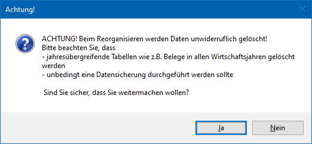
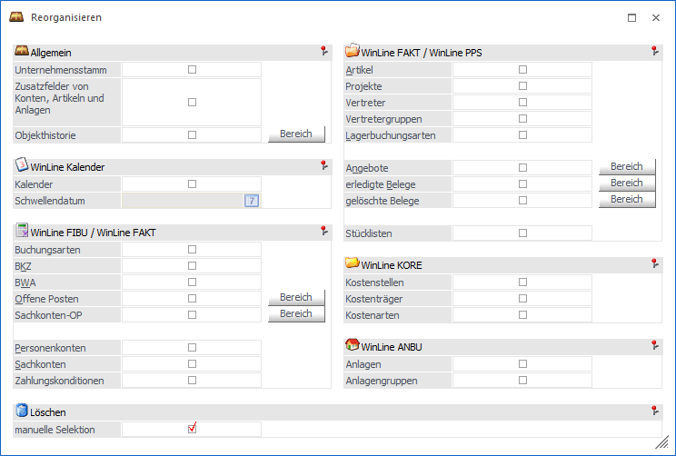
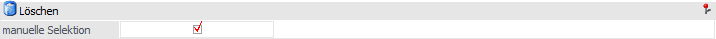
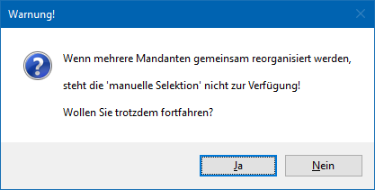

Um immer einen schnellen Zugriff auf den Datenstand sicherzustellen, sollten regelmäßig die Daten reorganisiert werden. Dabei können u.a. inaktiv gesetzte Konten, ausgeglichene Fakturen, vollständig abgearbeitete Belege usw. aus dem Datenstand entfernt werden.
Achtung
Dieser Menüpunkt kann nur von Benutzern geöffnet werden, die entweder Voll,- oder Datenadministratoren-Rechte besitzen. D.h. von Benutzern, bei denen in der Benutzeranlage die Checkbox Administrator oder Datenadministrator aktiviert ist.
Nachdem das Reorganisieren über den Menüpunkt…
1 WinLine START
1 Abschluss
1 Reorganisieren
… aufgerufen wurde, wird zunächst ein Warnhinweis ausgegeben:

D.h. bevor der Reorg durchgeführt wird, sollte unbedingt eine Datensicherung erstellt werden! Im Anschluss an die Meldung wird die Reorg-Selektion angezeigt.

Folgende Bereiche können reorganisiert werden:
ü Bereich "WinLine FIBU / WinLine FAKT"
ü Bereich "WinLine FAKT / WinLine PPS"
Löschen

Ø manuelle Selektion
Mit Hilfe dieser Option kann das Reorganisieren von Stammdaten selektiv vorgenommen werden. D.h. bei Anwahl des Buttons "Ok" bzw. der Taste F5 wird zunächst der Selektions-Bereich geöffnet, in welchem die betroffenen Datensätze angezeigt und für einen Reorg ausgewählt werden können.
Achtung
Die manuelle Selektion gilt nicht für Bewegungsdaten (Offene Posten, Sachkonten-OP und Belege)!
Buttons

Ø Ok
Durch Anklicken des Buttons "Ok" bzw. der Taste F5 wird der Reorg entsprechend den vorgenommenen Einstellungen gestartet. Abschließend kann über den Bereich "Statusbericht" ein Protokoll ausgegeben werden.
Hinweis
Wurde die Option "manuelle Selektion" aktiviert und Daten aus den Bereichen "Stammdaten" und "Bewegungsdaten" gewählt, so werden zunächst die Bewegungsdaten reorganisiert und anschließend der der Selektions-Bereich geöffnet.
Ø Ende
Durch Drücken des Buttons "Ende" bzw. der Taste ESC wird das Fenster geschlossen und kein Reorg durchgeführt.
Ø Mandantenselektion
Sofern es sich bei dem aktuellen Mandanten um einen Konsolidierungsmandanten (Haupt oder Sub) handelt, können mit Hilfe dieses Buttons die beim Reorg zu berücksichtigten Mandanten gewählt werden.
Hinweis
Nach Anwahl des Buttons erscheint zunächst folgende Warnung:

Wird diese mit "Ja" bestätigt, so wird das Fenster "Mandanten-/Jahres-Selektion" geöffnet und die Mandanten können gewählt werden. Bei "Nein" kann keine Mandantenselektion erfolgen.
Ø Hauptfenster
Befindet man sich in der Unterselektion einer Auswahl, so kann durch Anwahl dieses Buttons wieder in die Übersicht gewechselt werden.